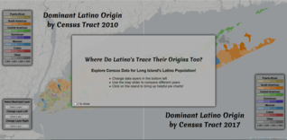
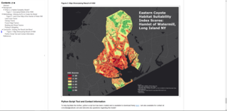

Carl Vricella - GIS Analyst
Analysis
Web Mapping & Web Application Development
Cartography
Work Flow Automation
Database Design & Development
Past Projects

LI Latino Origin Dominance by Census Block

Eastern Coyote Habitat Suitability Model